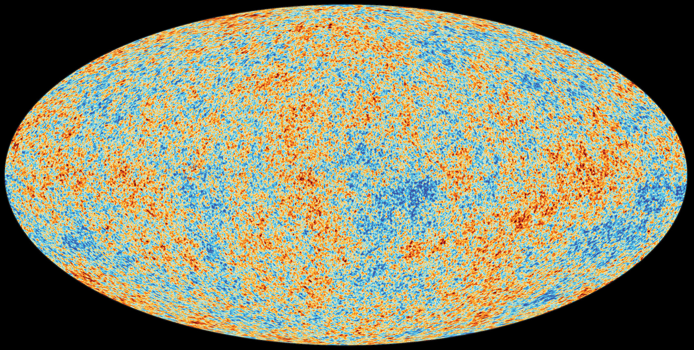

Home
Galaxies

Galaxies are categorized according to their visual morphology as elliptical, spiral, or irregular.Many are thought to have supermassive black holes at their centers. The Milky Way's central black hole, known as Sagittarius A*, has a mass four million times greater than the Sun.Source: wikipedia
Local Groups
The Local Group is the galaxy group that includes the Milky Way. It consists of two collections of galaxies in a "dumbbell" shape; the Milky Way and its satellites form one lobe, and the Andromeda Galaxy and its satellites constitute the other. Source: wikipedia
Superclusters

A supercluster is a large group of smaller galaxy clusters or galaxy groups; they are among the largest known structures in the universe. The Milky Way is part of the Local Group galaxy group (which contains more than 54 galaxies), which in turn is part of the Virgo Supercluster, which is part of the Laniakea Supercluster, which is part of the Pisces Cetus Supercluster Complex. Source: wikipedia
Universe
The universe is all of space and time and their contents. It comprises all of existence, any fundamental interaction, physical process and physical constant, and therefore all forms of energy and matter, and the structures they form, from sub-atomic particles to entire galaxies. Source: wikipedia